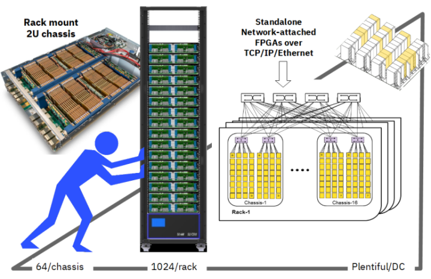

2. Overview of cloudFPGA¶
The cloudFPGA (cF) proposal is to promote FPGAs to become 1st class-citizens in data centers (DC) by setting the FPGAs free from the traditional CPU-bus attachments and by making them plentiful in modern hyperscale DCs.
The first proposition is carried out by disaggregating the FPGAs from the server nodes and by connecting the FPGAs directly to the DC network. As a result, FPGAs can communicate with other CPUs and FPGAs in the DC network with low latency and high bandwidth .

The second is achieved by turning the FPGAs into standalone network attached FPGAs while densely packing them into DC chassis and racks. From that prospect, FPGAs become autonomous and 1st class-compute nodes that can be reached anywhere in the DC via their IP address.


{kind=link}
2.1. The cloudFPGA Service Architecture¶
In the cloud computing universe, a CPU Instance is a hardware resource (such as a server or a virtual machine) combined with the image of an operating system (such as Linux or Windows). Next, different types of CPU instances are offered in the Cloud based on varying hardware capabilities such as clock frequency, #cores, memory size, computing power, etc. Finally, when deploying a workload on the Cloud, users select the CPU instance that best matches the requirements of their application.
The cloud service architecture of cloudFPGA is comparable to a cloud service hosting traditional servers and virtual machines when considering the following correlation cases:
in cF, the equivalent of the CPU-based hardware resource is an FPGA device and its surrounding board components. We refer to such an FPGA card as an FPGA module (MOD).
in cF, the equivalent of the OS kernel is a piece of reconfigurable logic that contains the custom interfaces and run-time logic to host and run a workload. We refer to such a kernel implemented in logic gates as a Shell.
As a result, the counter part of a CPU instance is an FPGA Instance and we can draw the following parallels:
Instance Type |
Description |
|---|---|
CPU_Instance |
Hw_Resource + OS_Image |
FPGA_Instance |
FPGA_Module + Shell |
With respect to the above definition of an FPGA Instance, we further refer to an FPGA Cluster as a set of N FPGA Instances.
Cluster Type |
Description |
|---|---|
CPU_Cluster |
N * CPU_Instances |
FPGA_Cluster |
N * FPGA_Instances |
2.2. The cloudFPGA Development Flows¶
A cloudFPGA application is referred to as a Role (ROL) and it is typically deployed using Partial Reconfiguration (PR) over the data center network. The various design flows for developing and deploying FPGA bitstreams of such ROL applications, are presented in the figure below.
the leftmost situation depicts a user working on a remote machine to develop his application and later deploy it on a single cloudFPGA instance (represented here as a little yellow square box at the bottom of the figure). In this remote scenario, the user’s computer is expected to supervise the FPGA instance located in our on-premises Cloud infrastructure, and to feed it with appropriate data and commands.
the middle case shows a user developing with a Virtual Machine (VM) hosted in our on-premises Cloud infrastructure and later deploying his application on multiple FPGA instances. Obviously, the preferred way to manage these duplicated FPGA instances is to re-use that VM or a similar one located in the same Cloud infrastructure.
the rightmost column exemplifies a user deploying multiple VMs as well as multiple clusters of FPGAs.
{kind=link}
To produce a bitstream in the above scenario #1, you may use the Xilinx design tool version of your choice. In return, you must be able to check out any corresponding product license (if required) on your own. For the scenario #2, we offer a pre-installed Linux distribution (typically CentOS) and a free Xilinx Vivado installation (typically Vivado 2017.4).
2.3. The cloudFPGA Research Platform¶
The cloudFPGA Research Platform (cFRP) is a 2U height by 19 inches wide chassis featuring 64 FPGA instances. The chassis is equipped with two sleds (S0, S1), each sled consisting of 32 FPGA instances connected to an Intel FM6000 Ethernet switch via a carrier board. The FM6000 acts as a leaf switch that aggregates 32x10GbE links from the FPGAs and exposes them to a higher-level spin network via 8x40GbE up-links. This amounts to a bi-sectional bandwidth of 640 Gb/s per sled.

Next, a cloudFPGA Infrastructure consists of numerous such cFRPs assembled into one or multiple DC racks.
Note that knowledge of the cFRP is not required for developing with cloudFPGA. The only concept that a user must grasp, is that IP-based switching and routing among FPGAs and CPU servers provide DC-wide end-to-end connectivity and flexibility. However, the above cFRP details might be relevant to advanced users who seek ultra low-latency and who may want to deploy their cluster on FPGAs which are spatially close in a sled, a chassis or a rack.
2.4. The cloudFPGA Development Kit¶
A cloudFPGA application builds on the design pattern referred to as Shell Role Architecture (SRA). This design separates the platform-specific parts (i.e. the Shell) from the application-specific parts (i.e. the Role) to increase the re-usability and to isolate the two parts.
The Shell (SHL) contains all necessary I/O components, the run-time modules and the network stack that hooks the FPGA to the DC network. It further abstracts all these hardware components by exposing standard AXI interfaces to the user. From a computer operating system perspective, the Shell can be seen as the conceptual counterpart of the kernel space.
The Role (ROL) is the application-specific part of the FPGA logic. It embeds the user’s custom application and can be assimilated to a CPU application executed in user space.

Multiple shell architectures might be available for a given
FPGA module (MOD). Once a user has decided for a module
and a shell to run his role, it is the duty of the cloudFPGA development kit to assemble
the tuple {MOD, SHL, ROL} into a so-called cloudFPGA Project (cFp). The
cFDK repository contains all the source code, the
documentation and the build scripts that are necessary to create such a cloudFPGA project.
2.4.1. User Privilege Layers¶
Depending on the commitment sought by the user, the cFDK offers two kind of development experiences characterized by different levels of protection.
common users are unprivileged users who use the development kit to build their custom hardware accelerated application, generate an FPGA bitstream and run it on a cloudFPGA instance.
privileged users are granted the right to modify an existing shell or to create one with new features. This status must be requested and authorized by the cF team.
Warning: The cFDK is only available for Linux operating systems.
2.5. The cloudFPGA Organization¶
The cloudFPGA organization is a central place for sharing and hosting cloudFPGA related projects and collaborations.
{kind=link}
As of today, the organization consists of two main types of repositories:
repositories which are part of the cloudFPGA core system such as:
the cFDK which contains a framework to help implement your FPGA application on a cloudFPGA research platform,
the cFSP which includes a support library for accessing the data and control paths of a cloudFPGA instance.
the cFCreate tool which eases the creation and the update of cloudFPGA projects,
the Doc repository which contains the generic cloudFPGA documentation used to build the GitHub pages that you are currently reading.
the Dox which is used to generate the Doxygen formatted documentation of the cFDK.
repositories which contain specific cloudFPGA projects developed by the community such as:
cFp_HelloKale a ‘Hello world’ project based upon the shell ‘Kale’,
cFp_HelloThemisto a ‘Hello world’ project based upon the shell ‘Themisto’,
cFp_Zoo a set of domain-specific accelerators for the hybrid multi-cloud era, including some of the open source Vitis Library adapted for the cloudFPGA platform.
- Info
By convention, the repository’s name of a cloudFPGA project is always pre-pended with the string “cFp_” for cloudFPGA project.